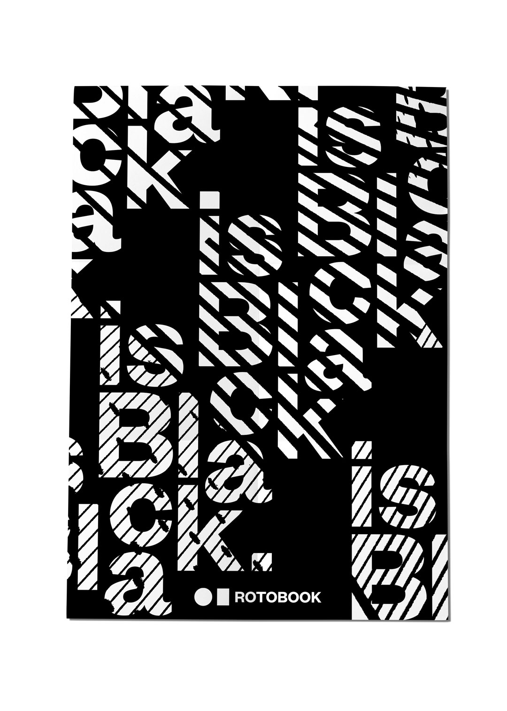
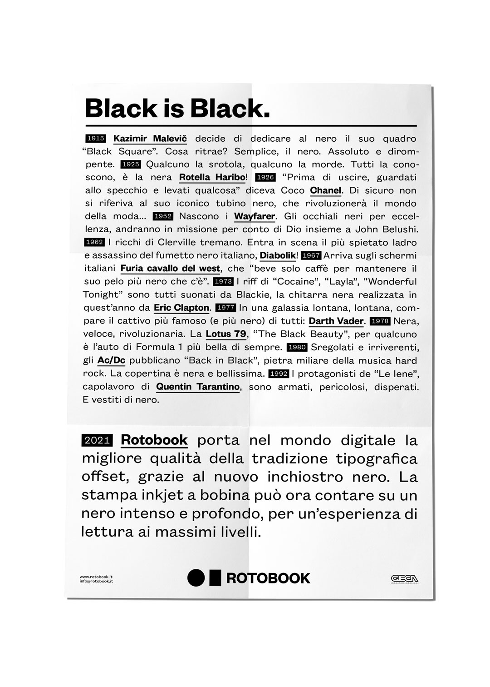
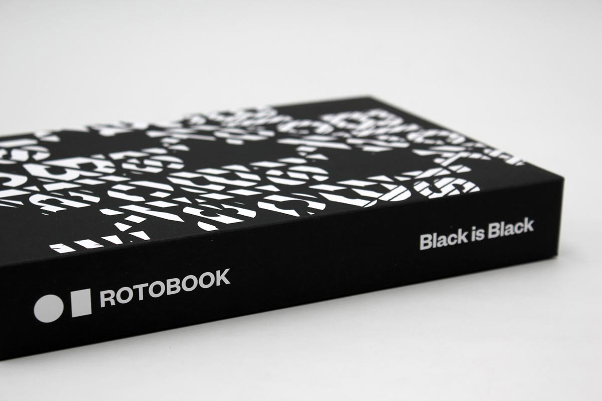
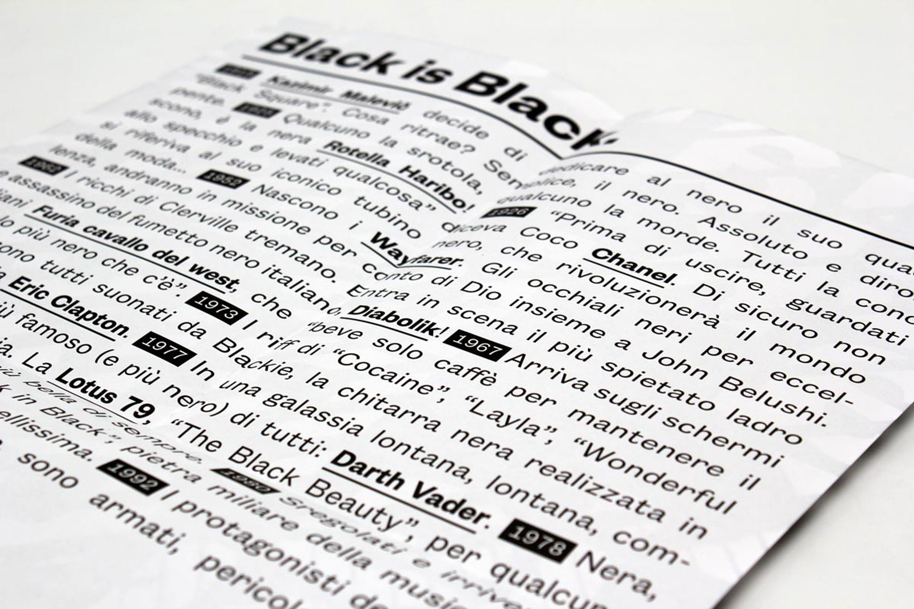
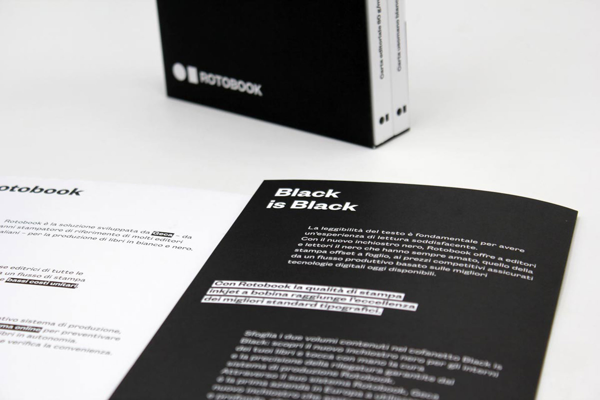
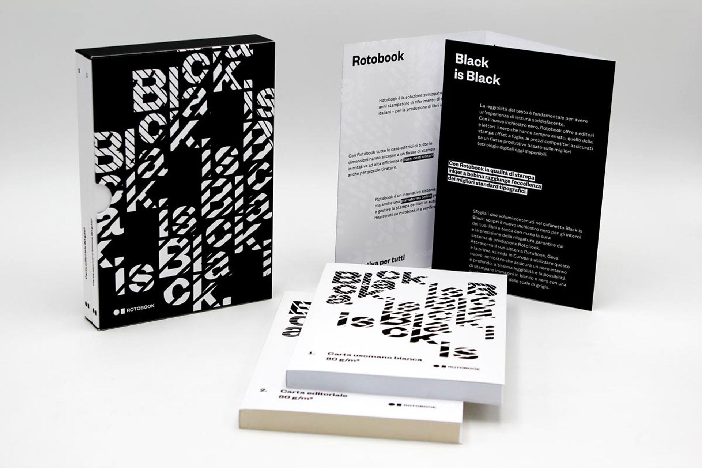
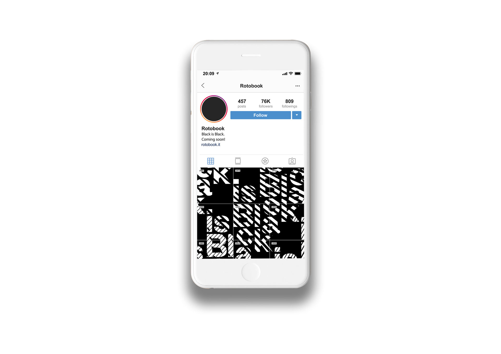
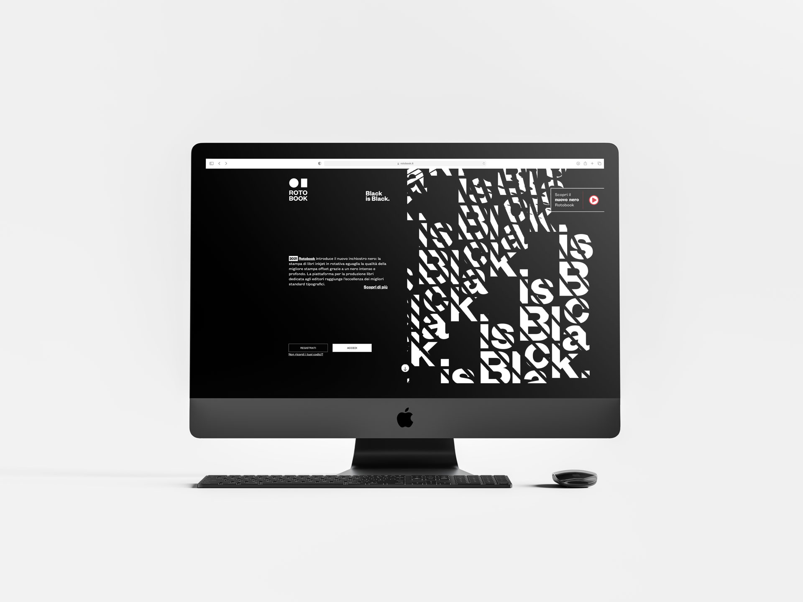

In 2021 Rotobook was the first company in Europe to introduce the usage of a new ink. An intense, deep black, with an expanded greyscale and an excellent resolution, the new ink ensures traditional offset quality even in inkjet web printing.
We were appointed by Geca to design and create a communication project to present this upgrade effectively.
Starting from the “classic” Rotobook patterns we developed a new design for the “Black is Black” campaign: a sort of “total black” edition that transformed all the graphics into black on all its channels, digital and traditional.
We also boosted this campaign with a special timeline dedicated to key moments when the color black was the protagonist of 20th-century pop culture. From Chanel’s little black dress to the first appearance of Darth Vader, from the birth of Diabolik to Tarantino’s “Reservoir Dogs” … up to 2021, the year of Rotobook’s “Black is Black” …
Starting from the “classic” Rotobook patterns we developed a new design for the “Black is Black” campaign: a sort of “total black” edition that transformed all the graphics into black on all its channels, digital and traditional.
We also boosted this campaign with a special timeline dedicated to key moments when the color black was the protagonist of 20th-century pop culture. From Chanel’s little black dress to the first appearance of Darth Vader, from the birth of Diabolik to Tarantino’s “Reservoir Dogs” … up to 2021, the year of Rotobook’s “Black is Black” …